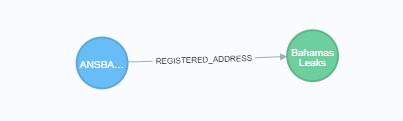

Welcome to Paradise Paper Search App’s Django + Neomodel Tutorial!¶
Overview¶
The aim of this tutorial is to demonstrate how to develop a web application using the Django framework backed by Neo4j, connecting them with the Neomodel driver. Neomodel is an Object Graph Mapper (OGM) for the Neo4j graph database.
The tutorial covers several topics, some of them are: how to configure Neomodel within a Django program, create models, query to the database, create an API. It provides best-practice guidance on implementing Neomodel.
The project is a web application to search for information on a Paradise Paper Graph Database. The data from the Database includes companies and people in more than 200 countries that are part of the Paradise Papers, Panama Papers, Bahama Leaks or the Offshore Leaks investigations.
The search of the program can filter the mentioned data by country, jurisdiction and/or data source. The approach adopted to make the program was to create a single-page web application, in which the data that is displayed will be obtained from an API. The API will fetch the data from the Neo4j database and return it as a JSON. This allows you to retrieve fast segments of data in several smaller requests, instead of making a single large request.
The types of data you can encounter when searching are: Entity, Officer, Intermediary, Address, Other. Each of these data records is displayed as a Node within the graph database. If you are not familiar with the definition of a node, it is a graphic data record. Here is an example:

In a graph database, nodes are linked with each other with lines; they represent the relationship between them. This term is called a edges or relationships. On this application there are offshore entities that have a registered address; Therefore there is a relationship type called REGISTERED_ADDRESS.
{kind=link}
In this example we can see a offshore entity register to an address on the bahamas.
What’s more, each node will have properties, which are essentially labels that are applied to a record. For example, an Entity node might have a label country with the value of “Bahamas”. Having these labels allows the system to find all the nodes that are in “Bahamas”, instead of the ones that are in “Canada” or “Mexico”. The properties can be compared as columns in SQl databases.